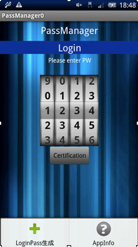
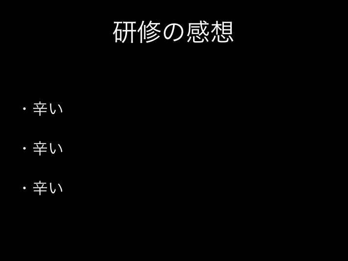

新卒エンジニア研修2013
キックオフ資料
新卒研修運営チーム
2013/04/12
Agenda
- 今までの研修
- 今回の研修
- 特訓の説明
- スケジュール
- ワーク
- 最後に
今までの研修
- よかった部分
- 営業の同期と絡めて一緒に何かをつくれた
- かなり自由奔放にやった
今までの研修
Androidアプリ開発③

実際にGooglePlayに載ってます
今までの研修
- だめだった部分
- つまらなすぎる座学
- 内容が実務と乖離していた
- 社外だと社内の人から教わることができない
今までの研修
某T氏の研修発表会のスライド

今までの研修
- 結果
- チーム配属後に学習しなければならないことが多かった
- 本人も何を学べばいいかのかわからず苦戦する
- 即戦力となるような実践はつめなかった
某S藤氏の言葉
「こんな形で出鼻をくじかれるとは思わなかった」
※某S藤氏のキメ顔写真
研修とは
- 最後のモラトリアムか？
- こなすものか？
- 教えてくれなかったらできない？
- 失敗はない？安全？
教えません、ですが考えて見て下さい
研修とは？
なぜ企業が給料を払ってまで生産性がなく学習だけの時間を新人に使うことを許すのかということを今この瞬間考える
今回の研修
- 方針
- 社内(部室)でやることで日々社員と交流できる
- 実務の内容の縮図を体験する
- 知識は実践で覚える
- ggrks
プログラマーになる方法（補足）
- ggrks(大事なことなので２回ry)
- コピー＆ペースト
- 自分なりの書き方に修正する
- 書いたコードを上から順に説明できるようにする
- 先人からレビューしてもらう
- 人のコードを読む、レビューする
特訓説明①
- 主旨
- 実務でやることを先取りする
- 独学ではやらないことを散りばめる
- 必要な単語は並べてあげる
- 各自で調べて提出する
そもそもこの特訓をやるには・・・？
という考えを大切にしてください
特訓説明②
- 配布した特訓シートに基づいてやる
- やるスケジュールは各自で決めること
- ハッカソン前には配布分は終わらせてね☆
特訓説明③
- 質問方法
- わからないことは弊社開発陣に#zakkyoで質問
- (特訓|アプリ)の指示の内容などは運営チームに#EngKensyuに質問
- 進め方などはメンターに相談
- その他は口頭で相談
プログラマー三大美徳
- 怠惰
- 短気
- 「俺がこんなに大変なのにコンピュータが楽をしてるのが許せない」
- 「ついカッとなってやった、後悔はしていない」
- 傲慢
- 「自分がつくったものがすごくないわけがない」
- 「使いづらいわけがない、拡張性がないわけない…」
全体スケジュール
- 4月12日 キックオフ→特訓開始
- 4月17日 MAXアワードキックオフ（他社との合同ハッカソン）
- 4月22日-25日 MAXアワード
- 以降アプリ製作開始(特訓と平行)
- 6月末 研修修了
ハッカソンは営業の同期とも一緒に行う
一日のタイムスケジュール
- 09:00〜 朝礼、メンターとのMTG、その後部室へ
- 09:30〜 特訓開始
- 12:00〜13:00 お昼
- 13:00～ 研修運営チームの見回り
- 13:30～18:00 特訓続き（ハッカソン後はアプリ制作
- 18:00～ 希望者は補修
※このスケジュールは提案です
ワーク
- 偽評価制度(QCP)
- 実際の給与交渉の超簡易的な縮図
- これでどうこうしないです
- 多分給料には影響しません
ワーク
BESTケースを記入して下さい
自由に記入